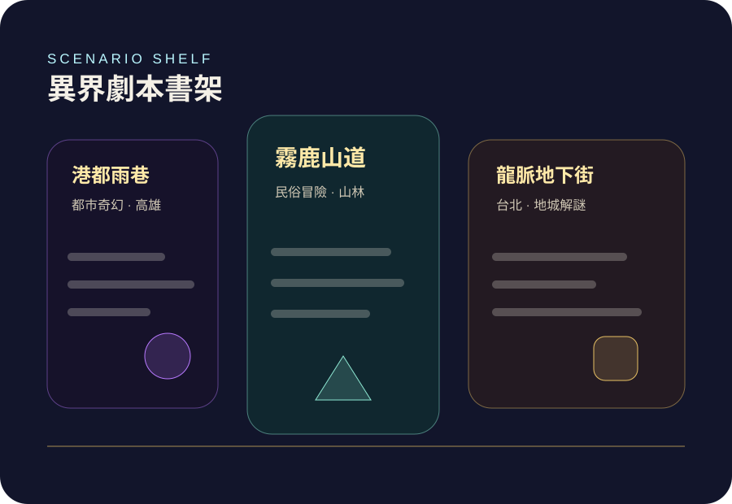

選擇劇本
從台灣民俗、都市奇幻、經典地城與自訂開場切入，先給玩家一個明確入口。
新版把官網重新定位成一座可被探索的異界控制台：裂隙、星圖、骰子、卷軸與桌面格線成為專屬語彙，減少一般 SaaS landing page 的相似感。
從台灣民俗、都市奇幻、經典地城與自訂開場切入，先給玩家一個明確入口。
把種族、職業、屬性與背景拆成視覺化步驟，避免新手被規則書阻擋。
玩家用自然語言提出任何行動，系統抽取意圖、擲骰、更新狀態並保存。
AI DM 依照已落盤的規則結果生成敘事，讓自由度與公平性同時存在。

「AI 不是取代 DM，而是讓每個沒約到團的人，今晚也能把骰子擲出去。」
Planar Table positioning line